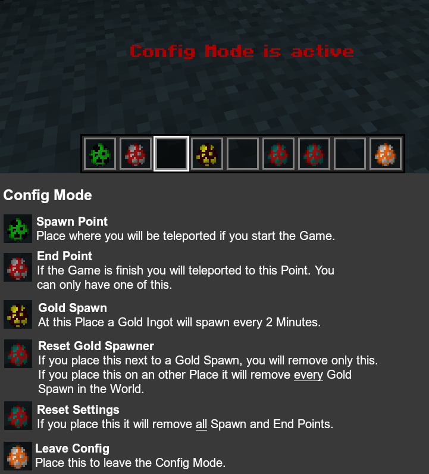

Murder
1.13 - 1.16.5
This Data Pack adds the game Murder. The game is modular, so you can play it on any map with a short and simple installation.
How to Play
- Finish the setup and exit the Config Mode.
- Start the game with the following command. You don't need op for that.
/trigger Murder
To exit the game you have to execute the same command again. - After that a 30 sec long countdown starts. During this time other players can join the game. (At least 2 players are needed for the game to start.)
- After the 30 secs, the game starts and the randomly selected Murder has 5 mins to kill all the other players.
- One of the other players gets a Bow. He is the Detective and must find the Murder and kill him before he can kill the other players.
- The other players can hide from the Murder or collect Gold. (With 6 Gold you get a bow, with which you can also hunt the Murder)
- When the Murder has killed all the players, he wins. But if the time runs out before he has killed all players or he is killed, the surviving players win.
Setup

- Install the Data Pack and rejoin the world or restart the server.
- Build your Murder map.
- Enable cheats or give yourself op if you are on a server, and execute this command:
/tag @s add murder_config - In the picture you can see what the different items do if you place them.
Settings
Disable spectator after death.
/scoreboard players set #spectator murder 1
Disable Gold drop.
/scoreboard players set #gold murder 1
Disable automated Bow purchase.
/scoreboard players set #bow murder 1
Disable chat start with /trigger Murder. (You need to make your own start)
/scoreboard players set #chatstart murder 1
To enable the setting again you need to execute the same command except of the 1 replace with a 0.